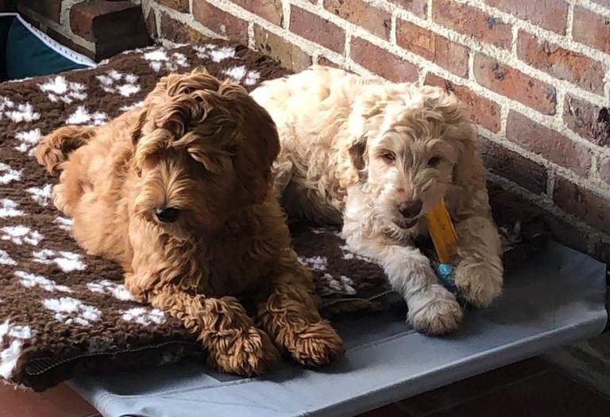
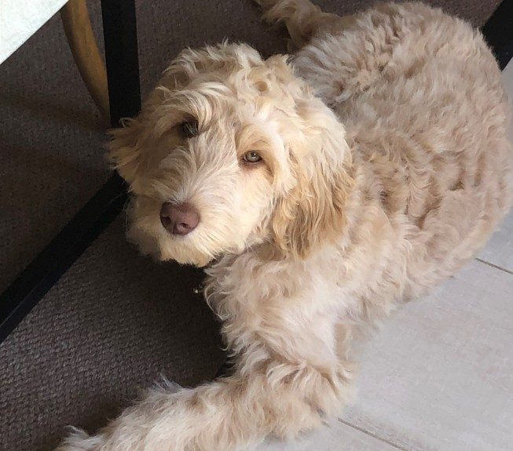
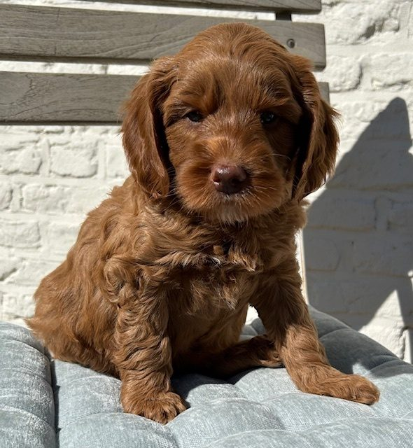
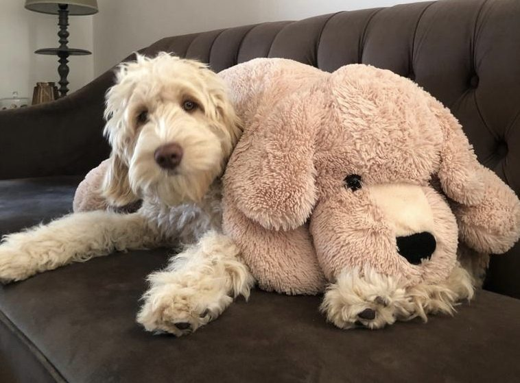
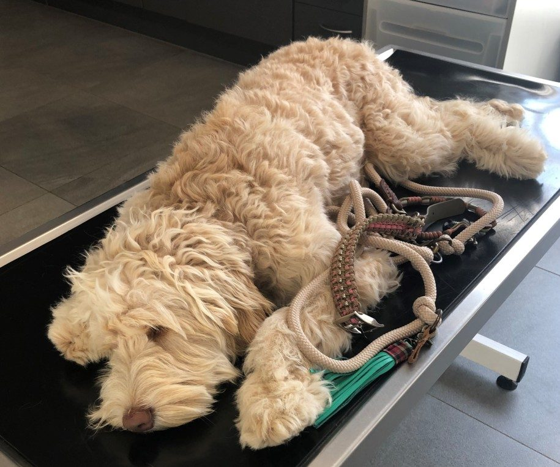
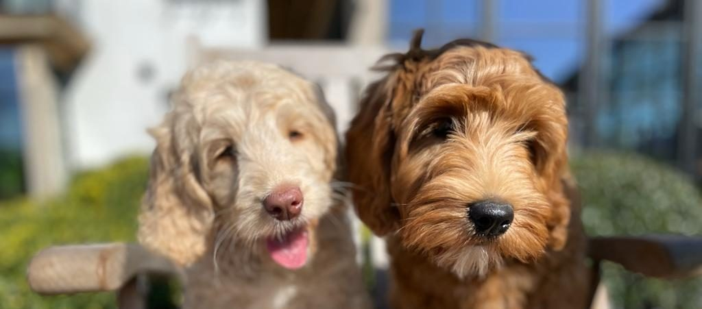

Bella & Gust
Bernedoodle F1B
- Geboren
- 3.08.2026
- Naar huis vanaf
- 28.09.2026
- Nest
- 6 pups
welkom bij
Bernedoodles en Australian Labradoodles, geboren en opgegroeid in onze woonkamer in Vlaanderen. Kleine nesten, zodat elke pup de tijd krijgt die hij verdient.

Handmatig bijgewerkt. Is een nest vol, dan kan je nog op de wachtlijst voor het volgende.

Wij zijn een kleine gezinskennel. De pups worden geboren in onze woonkamer, niet in een apart gebouw, en groeien op tussen de wasmachine, de deurbel en de kleinkinderen. Voor ze vertrekken hebben ze een stofzuiger, een autorit en een onbekende met een hoed meegemaakt.
We hebben hoogstens twee nesten per jaar. Dat is geen commerciële keuze, het is gewoon zoveel tijd als één gezin te geven heeft.
Jools
Drie lijnen, elk met een eigen karakter. We denken graag mee over welke bij jouw huis past, voor je kiest.

Berner sennenhond met poedel. Rustig binnen, dwaas buiten, en berucht aanhankelijk bij wie er ook maar gaat zitten.

De meest voorspelbare vacht van de drie en thuis een makkelijke uit-knop. Wil een taak, en daarna de bank.

De warmte van een golden retriever met een lichtere vacht. De meest open van onze lijnen — kent nauwelijks vreemden.
Ongeveer zes maanden, soms langer. Dit is de hele route, zodat niets je verrast.
Vul het formulier in of bel gewoon. We vragen naar je huis, je uren en je andere dieren — niet om te oordelen, wel om te matchen.
Altijd voor er geld aan te pas komt. Je ontmoet de moeder, ziet waar de pups slapen en vraagt alles wat je wil.
Een schriftelijk contract en een voorschot houden je plaats vrij. Rond vijf weken koppelen we pups aan gezinnen, op basis van karakter.
Op acht weken, gechipt, ontwormd, gevaccineerd en met Europees paspoort. Je vertrekt met voer, een dekentje dat naar huis ruikt, en ons nummer.
“Zij sliep de eerste nacht door. Wij niet.”Ilse & Tom, Leuven — bernedoodle Pip

Reu · tricolour · de durver
Beschikbaar
Teef · zwart-wit · de kijker
Beschikbaar
Reu · tricolour · de slaper
Gereserveerd
Teef · merle · de schaduw
GereserveerdFoto's verschijnen hier ongeveer drie weken na de geboorte. Tot dan houdt de lijst het eerlijk: wie eerst komt, kiest eerst, zonder uitzonderingen.

Moeder
Berner sennenhond
Rustig, stil en lichtjes bazig tegen de andere honden. Ze voedt haar pups op met bijzonder weinig hulp van ons, precies zoals het hoort.

Vader
Grote poedel
Zo slim dat het soms lastig is. Hij opent deuren, vindt de koekjes, en geeft een zachte, weinig verharende vacht door.

Moeder
Australian Labradoodle
Degene die elke bezoeker aan de poort begroet. Fleecevacht, eindeloos geduld, en een zwak voor water.

Moeder
Australian Labradoodle
De jongste van de vier en nog altijd overtuigd dat ze een pup is. Zachtaardig, onverstoorbaar bij lawaai, en goed met katten — dat hebben we getest.
We houden onze groep bewust klein. Om geen enkele van onze honden de 100% aandacht en liefde van een gezin te ontzeggen, plaatsen we sommigen bij een eigen gastgezin.
De hond woont bij jou als jouw hond: jouw bank, jouw wandelingen, jouw vakanties. Ze komt enkel bij ons terug voor een dekking en voor de weken rond een nest, en gaat daarna meteen weer naar huis. Zodra ze met fokpensioen gaat, blijft ze definitief bij jou.
Laat gerust iets van je horen — bellen mag altijd.
We beantwoorden elk bericht zelf. Aan een eerste gesprek hangt niets vast — we praten het liever rustig uit dan het te haasten.

Door onszelf genomen, meestal met een gsm, meestal met één hand.


Een paar minuten lawaai, van de puppyren tot in de tuin.
Hoe meer je vertelt, hoe beter we een pup bij je kunnen matchen.
Dit formulier is nog niet gekoppeld — het moet voor de lancering aan je mailbox verbonden worden.
Vul hier je actuele prijs in, en vermeld wat inbegrepen is: vaccinaties, chip, paspoort, startvoer en het puppypakket.
Ja, en we hebben dat liever. Je ontmoet de moeder en ziet waar de pups slapen. We nemen geen voorschot aan van wie niet is langsgeweest.
Heel weinig, maar geen enkele vacht is een garantie. Een krullendere vacht verhaart minder en vraagt meer borstelen — ongeveer een kwartier, drie keer per week.
Meestal twee nesten, dus zes maanden tot een jaar. We zeggen dat liever eerlijk dan je te laten hopen.
Bel ons. Een hond van ons belandt nooit in een asiel — als je hem niet kan houden, op welke leeftijd ook, komt hij hier terug.